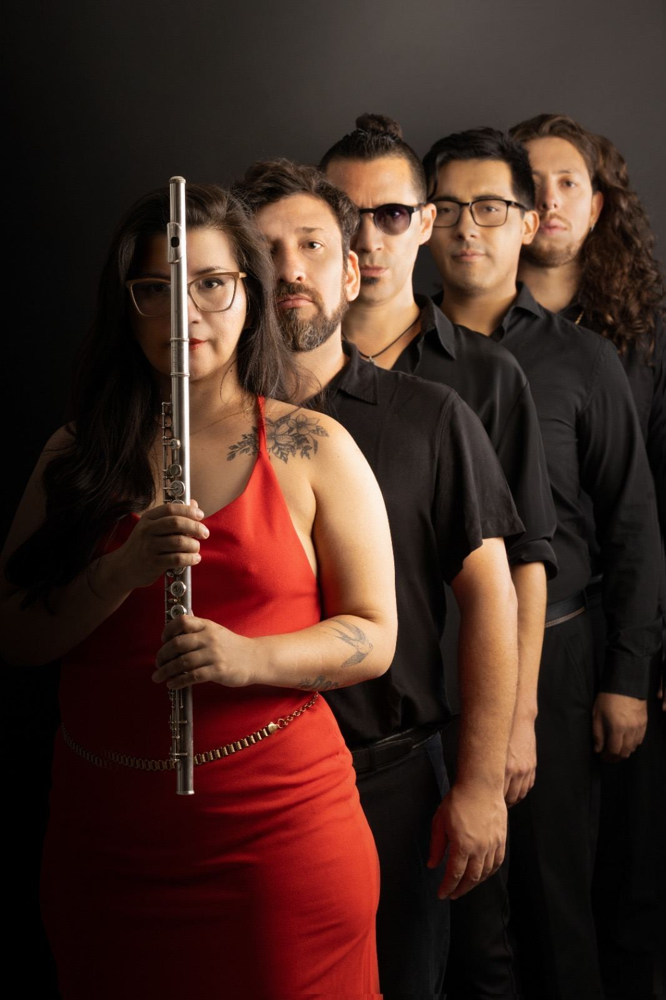
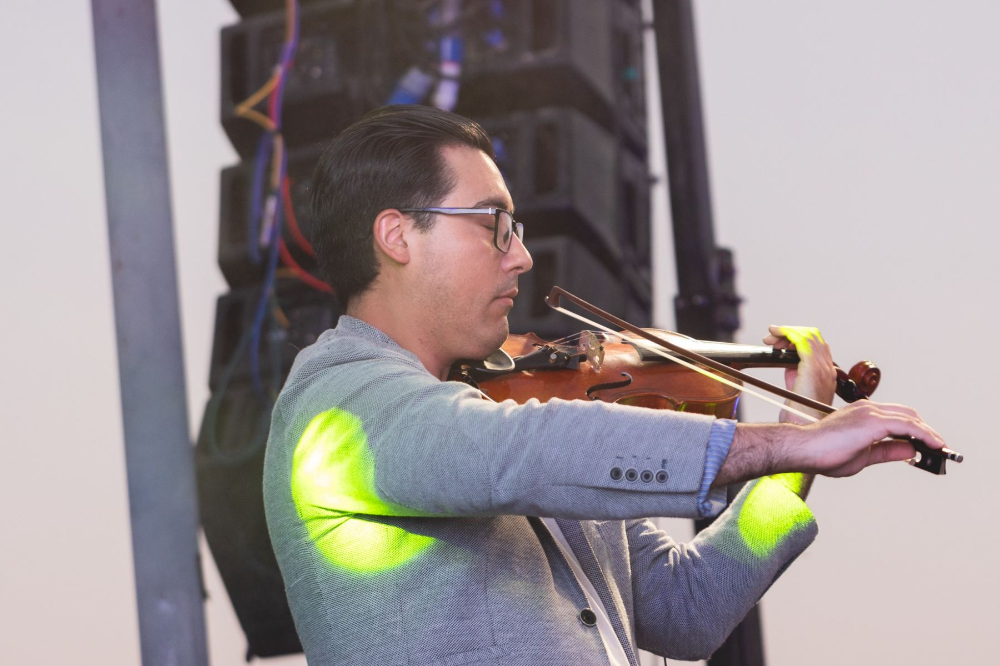
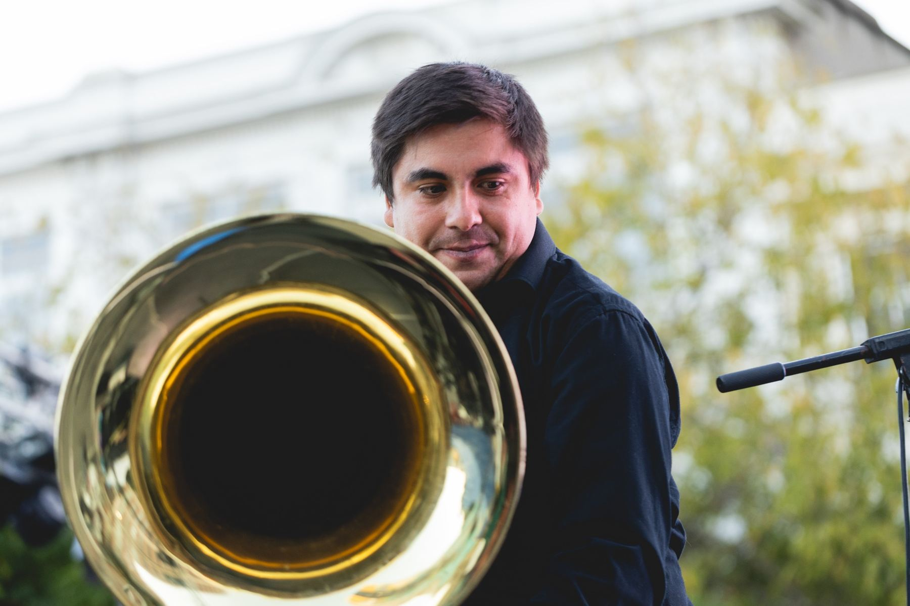

Piazzollamente presenta
Tango
para el
3001
El tango siempre te espera.
Y Piazzolla siempre te encuentra.
Y Piazzolla siempre te encuentra.
Una rosa. Una ciudad. Un corazón que insiste.
Dossier de espectáculo
Tango para el 3001 no agrega un concepto externo a Piazzolla. Entra en la música que él ya dejó escrita: una música donde la ciudad respira, se parte, se ríe, se enamora, se ensucia y vuelve a levantarse.
Ahí conviven el hambre y la rosa, la furia y la ternura, la sensualidad y la fe, el niño que trabaja de noche y el deseo obstinado de volver a vivir.
No es un concierto collage. Es un recorrido escénico por aquello que todavía no terminamos de comprender: el dolor del otro, la belleza que lo acompaña y la fuerza de seguir cantando incluso después de la decepción.

Tango para el 3001 nace desde una herida que no ha terminado de desaparecer. No se trata solamente del hambre. Ni del abandono. Ni de la tristeza. Se trata de aquello que seguimos sin comprender del dolor del otro.
Piazzolla y Ferrer escribieron ciudades donde conviven la belleza y la intemperie, el deseo y la pérdida, la ternura y la violencia. El conflicto del espectáculo vive ahí: en aquello que aún duele, aunque hayan pasado los siglos.
Pero Piazzolla nunca deja al mundo detenido en la herida. La respuesta no aparece como consuelo. Aparece como insistencia. Como una fuerza antigua y dolorosa de volver a creer.
Aunque exista el desencanto. Aunque la ciudad siga rota. Aunque el tiempo pase. Tango para el 3001 imagina el renacimiento no como ingenuidad, sino como decisión: volver a amar, volver a fundar, volver a crear sentido.
“Y a Buenos Aires de nuevo nos pondremos a fundar.”
La voz narrativa nace desde el centro del escenario. Valentina Galaz, flautista y directora artística, junto a los cantores, abre pequeños umbrales entre las obras: una anécdota, una imagen, una pregunta, una forma de acercar al público a ese lugar donde Piazzolla todavía arde.
No se trata de explicar la música. Se trata de dejar que la música encuentre una puerta humana antes de volver a sonar.
El espectáculo avanza como una ciudad interior. Cada bloque deja una marca: primero el impulso, luego la herida, después la locura como resistencia, la transformación y finalmente el renacimiento.
La ciudad despierta. Hay deseo, vértigo, pulso. Todo parece correr hacia una vida que todavía no sabe cuánto va a doler.
Aparece el hambre. La intemperie. La pérdida. La belleza deja de ser cómoda y empieza a doler.
Enloquecer no como escape, sino como acto de fe.
La ciudad se fragmenta. Todo se mezcla. El tango ya no cabe en una sola forma, pero sigue respirando.
No hay paraíso recuperado. Hay una decisión más difícil: volver a nacer con otro corazón.
“En Argentina todo se puede cambiar, menos el tango.”
El 3001 no es ciencia ficción. Es una provocación poética. Un tiempo que no veremos, pero que nos obliga a mirar lo que todavía permanece: la ciudad, la memoria, el deseo, el hambre, la fe antigua y dolorosa de volver a empezar.
El viaje siempre vuelve a Buenos Aires. A su barro, a su sal, a sus cafés, a sus sombras, a esa forma de belleza que no pide permiso para sobrevivir.

La rosa no aparece como ornamento romántico. Es la forma que toma la belleza cuando ha sido herida y aun así insiste. Al comienzo puede estar sola. Después se mancha, se quiebra, pierde pétalos, se oscurece. Pero no desaparece.
Al final, la rosa sobrevive y renace en otras rosas. No como final feliz: como fuerza compartida. Como jardín nacido después del caos.
Una primera señal de belleza en medio de la ciudad.
La flor recibe la intemperie y empieza a perder su inocencia.
Resiste sin volverse pura. Conserva la espina.
Se mezcla con la música, la escena, la memoria.
Las proyecciones no ilustran las obras. Funcionan como una segunda respiración: ciudad, rosa, sombra, textura y luz acompañan el viaje sin explicarlo.
Estas imágenes pertenecen al último espectáculo realizado por Piazzollamente: músicos presentes, cuerpos reales, instrumentos, luces, escenario y una energía colectiva que sostiene el viaje.




Piazzollamente es una agrupación dedicada a interpretar la música de Astor Piazzolla desde el contenido profundamente conmovedor y rico que ya existe en su obra.
Bajo la dirección artística y musical de Valentina Galaz, el ensamble aborda este repertorio como una música viva: capaz de tocar la furia, la sensualidad, la contradicción, la ternura y la necesidad de reinventarse.
Más que vestir a Piazzolla con una idea nueva, Piazzollamente vuelve a entrar en su música para dejar que ella misma abra la escena.
Propuesta para sala teatral con música en vivo, intervenciones habladas, visuales de fondo, diseño de iluminación y sonido amplificado. Adaptable a pantalla LED o proyección según condiciones técnicas del espacio.
Concierto escénico con relato, música en vivo, visualidad e iluminación.
Valentina Galaz, flauta. Diego Castro, violín. Anahi Torres, piano. Felipe Miñou, guitarra. Rodrigo Ugarte, contrabajo. Dos cantores invitados y batería.
Rosa, ciudad, textura, memoria y transformación escénica en movimiento.
70 minutos aprox.
Que el público salga emocionado y despierto. Que quiera escuchar más Piazzolla. Que quiera seguir a Piazzollamente. Pero sobre todo, que recuerde que todavía vale la pena sostener una forma de belleza en medio del ruido del mundo.